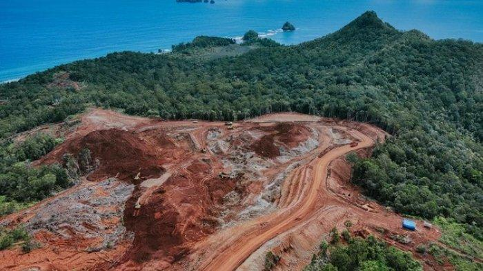

Indonesia saat ini memimpin industri tambang nikel dunia. Dari sepuluh tambang nikel terbesar di dunia, lima di antaranya berada di Indonesia. Salah satu proyek tambang yang menonjol adalah Weda Bay Project yang terletak di Maluku. Proyek ini dikenal sebagai tambang nikel terbesar di dunia dengan kapasitas produksi lebih dari 500 ribu ton nikel per tahun.
Nikel merupakan salah satu komoditas strategis dalam mendukung transisi energi global. Peran utamanya terlihat jelas di sektor transportasi listrik. Logam ini menjadi bahan baku utama dalam pembuatan baterai kendaraan listrik, yang menjadi fondasi penting dalam proses elektrifikasi di berbagai negara.
Dengan meningkatnya permintaan global terhadap kendaraan listrik, kebutuhan akan nikel juga terus melonjak. Hal ini menempatkan Indonesia pada posisi penting dalam rantai pasok energi bersih dunia.
Di balik kontribusinya terhadap transisi energi, kegiatan pertambangan nikel di Indonesia juga membawa dampak negatif yang signifikan terhadap lingkungan dan masyarakat. Pada awal tahun 2025 tercatat sejumlah bencana ekologis yang diduga berkaitan dengan aktivitas pertambangan nikel di Indonesia.
Beberapa daerah di Indonesia diduga mengalami bencana ekologis karena adanya aktivitas pertambangan nikel, di
antarannya:
Aktivitas tambang sering kali berdampak pada kehidupan masyarakat lokal. Hilangnya lahan produktif, polusi air, dan gangguan kesehatan adalah beberapa dampak yang muncul bersamaan dengan ekspansi industri nikel.
Banyak insiden ekologis terjadi akibat lemahnya pengawasan dan minimnya penegakan hukum terhadap pelanggaran lingkungan oleh perusahaan tambang.
Agar industri nikel tidak semakin merusak alam dan mengorbankan masyarakat, pemerintah perlu mengambil langkah tegas dan terukur. Beberapa upaya yang dapat dilakukan meliputi:
Keberlanjutan industri nikel di Indonesia tidak dapat hanya dilihat dari sisi ekonomi dan kontribusinya terhadap energi hijau. Perlindungan lingkungan dan keadilan sosial harus menjadi pilar utama dalam pengelolaan sumber daya alam ini. Dengan komitmen kuat dari pemerintah, perusahaan, dan masyarakat sipil, Indonesia berpotensi menjadi pemimpin industri nikel global yang tidak hanya unggul secara produksi, tetapi juga bertanggung jawab secara ekologis dan sosial.